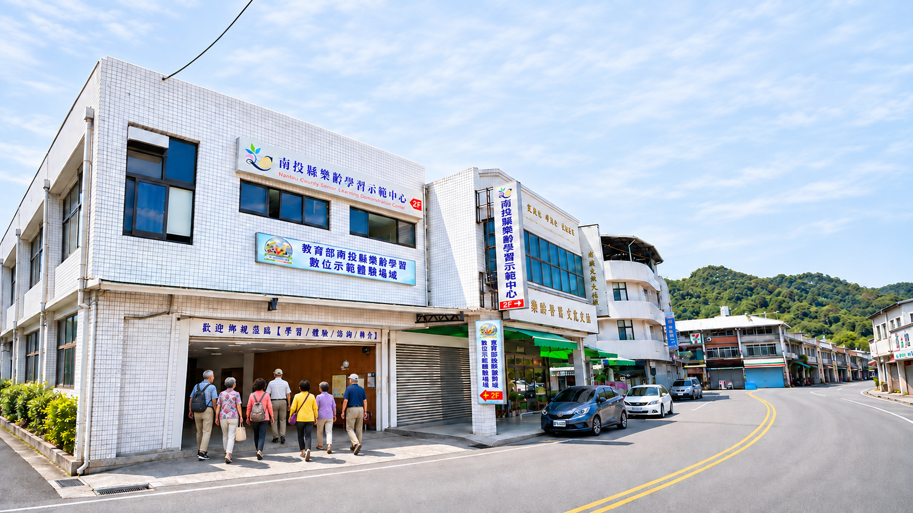
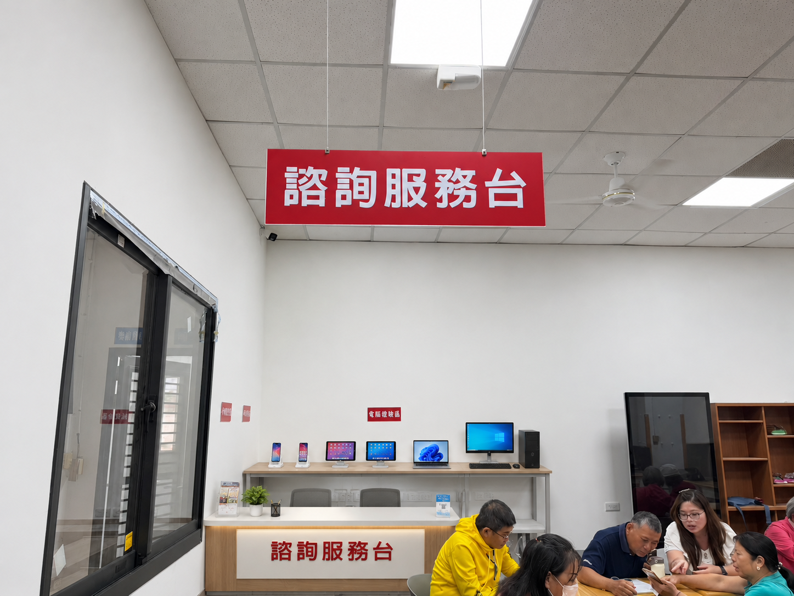
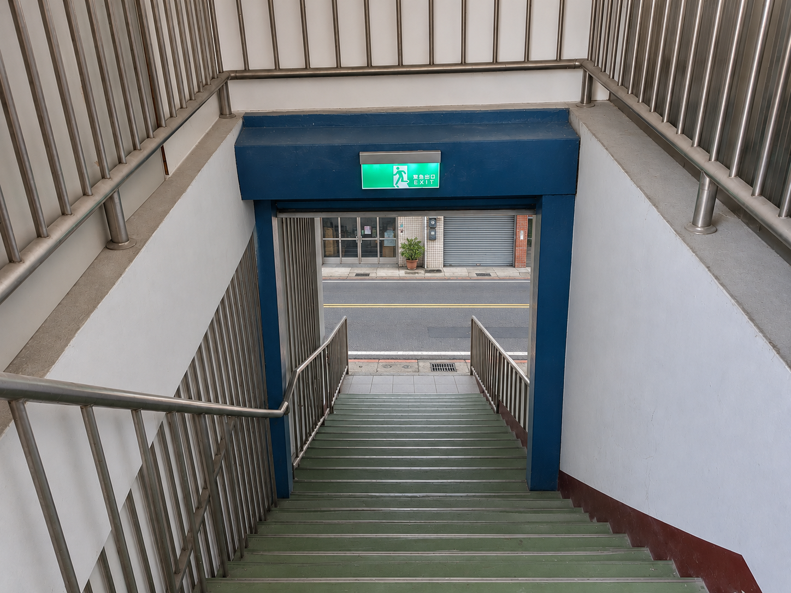
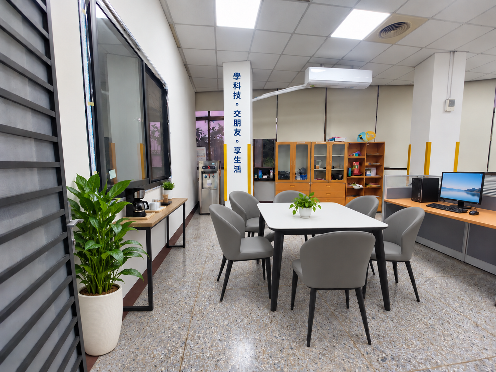
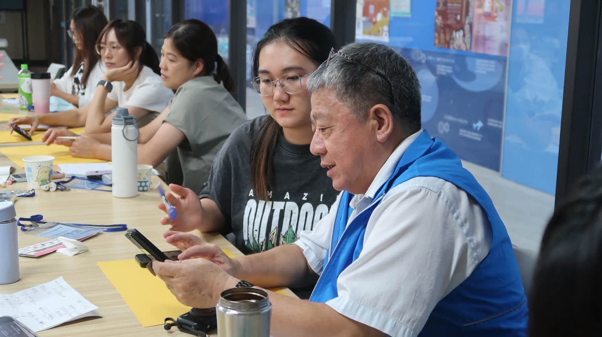

推動宗旨與定位
由教育部指導、南投縣政府主辦、南投縣樂齡教育文化發展協會承辦。以魚池為核心樞紐，建立「願意學、能夠學、持續學」的高齡數位支持環境。
AI 與特色數位課程
開辦智慧手機活用、健保快易通、防詐騙、AI 虛擬主播、空拍與 360VR 景點導覽，結合在地紅玉紅茶與小農特產進行數位行銷培力。
青銀跨世代共學
攜手三育高中青年小幫手 9 人與在地樂齡大幫手 16 人，秉持「阿嬤，我們陪您慢慢學」理念，提供無壓力的個別陪伴與操作指導。
公私協力與在地共榮
攜手經典大飯店微笑魚市集、三育基督學院永續循環節，並拓展 8 處長照與社區服務據點，吸引南投 6 大鄉鎮長輩熱烈參與。
📍 魚池數位中心實體位置與交通地圖
📸 魚池數位中心實景與教學照片特輯





🎬 魚池數位中心精彩影音與課程成果
🤖 AI虛擬主播：頭社活盆地特色三寶推廣
魚池DOC輔導在地農民，運用 AI 虛擬主播技術為絲瓜、金銀花、澳洲茶樹打造代言人，創造偏鄉數位轉型新模範。
🎨 AI圖像生成與特色商品設計課程
帶領學員使用生成式 AI 設計在地特色徽章與紅茶文創品，將科技學習實質轉化為生活與文創產能。
👵 魚池尖社區關懷據點：樂齡數位陪伴
數位幫手走入魚池尖社區照顧關懷據點，耐心帶領長輩學習智慧手機功能與健康防詐騙知識，氣氛溫馨。
🎓 教育部輔導團隊訪視南投示範場域紀錄
教育部訪視委員實地考察教學區、諮詢區與體驗區，肯定跨世代共學機制與在地深耕成果。
📰 魚池數位中心相關媒體報導與專題成果
跨世代青銀共學！三育高中青年化身數位幫手，陪伴魚池阿嬤手把手學手機
魚池數位中心打造「有溫度的數位課堂」，高中志工每週定期駐點，耐心解說 LINE 視訊、健保快易通與拍照修圖，讓偏鄉長者跨越數位鴻溝，展現自信笑容。
魚池DOC導入AI魔法地圖與短影音行銷，助小農行銷日月潭紅茶與在地民宿
結合在地紅茶產業特色，中心開辦 AI 圖片創作、商品包裝攝影與社群經營工作坊，輔導中高齡小農透過網路直播與 Google 地圖建立專屬品牌數位資產。
教育部南投示範體驗場域訪視輔導，魚池示範點落實「學會比學完還重要」理念
訪視委員肯定魚池場域每週二固定時段諮詢服務（累計366人次），以及8處拓點與滿意度4.94分的高度肯定，成功建立偏鄉數位體驗的亮點典範。
經典大飯店攜手魚池樂齡推展「數位遊程」，創造銀髮科技學習新典範
透過「經典大飯店微笑魚市集」與創新「樂齡數位遊程」，將智慧科技融入旅遊情境，長輩在旅遊探索中自然完成各項數位任務，開啟產業永續合作新局。
四大執行支柱與推動成果
- 三大分區完備：教學區（智慧互動黑板）、諮詢區（個別解答）、體驗區（手機平板電腦自主摸索）。
- 樂齡安全動線：配置消防栓、警報裝置、樓梯扶手與清晰逃生指標，落實安全檢核。
- 高速無線網絡：建置高速 Wi-Fi 支援多設備連線，並設立學員休閒討論區。
- 專案管理員到位：王于萍專管完成培訓，提供貼近長輩的「行動諮詢服務」。
- 25位數位幫手：「樂齡大幫手 16 人」+ 三育高中「青年小幫手 9 人」，手把手帶領阿嬤跨越數位門檻。
- 18位專業師資：嚴謹依規範聘任大學師資 (3位)、核心講師 (13位)、數位講師 (2位)。
- 紮實課程進度：數位學習 15 門/93 小時（已成 81h，達成率 87.1%），教育訓練 4 門/27 小時全數結業。
- 常態諮詢機制：每週二上午 9:00–12:00 開放，課後諮詢 130 人次、一對一 156 人次、電話/LINE 80 人次。
- 4.94 高分回饋：親切度 4.96、內容 4.95、整體 4.94，落實「大字示範」與「生活情境化」教學。
- 特色課程「大家來玩魚池」：串聯魚池在地紅茶、生態與觀光，以生活現場為數位學習教室。
- 經典大飯店跨界：結合「微笑魚市集」設攤互動，並共同打造「樂齡數位遊程」新模式。
- 校園與社區節慶：攜手三育基督學院於「魚池永續循環節」推展跨世代數位宣導。
社區拓點與學員擴散成效
場域已於魚池鄉成功拓展 8 處服務分班，讓長輩在熟悉的長照站與社區聚落就近操作數位工具：
完整 25 頁投影片快速預覽
第二次訪視輔導・委員核心問答與提報題庫
針對教育部第二次訪視輔導評鑑焦點，整理 12 大高頻必考題、法規標準、亮點機制與滿分應答技巧，並提供「列表全覽」與「模擬考演練」雙模式。
題目載入中...

🎙️ 簡報人隨身講稿與備忘重點（陳足女常務監事）
建議演講語速平穩、親切，配合投影片數據強調具體成果二維條碼 (QR Code)

公開展示極簡縮網址
💡 現場掃碼操作四步驟（手機免安裝任何 APP）
iPhone 或 Android 手機皆可，開啟內建相機功能。
將手機鏡頭對準畫面左側的 QR Code 圖案。
螢幕將自動出現網址提示氣泡，輕按即可立即進入。
已全面解除密碼保護，免登入、無障礙暢覽全部成果！